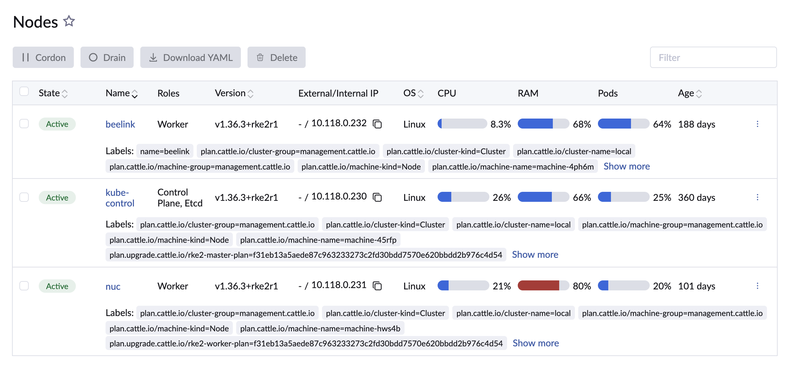
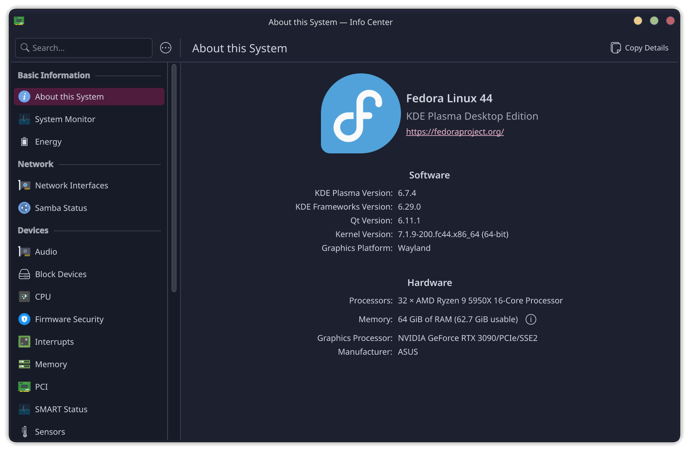
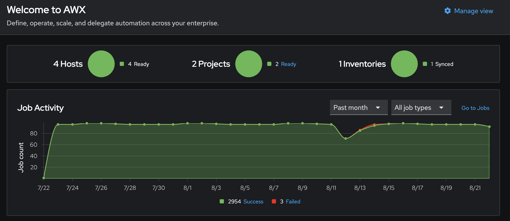
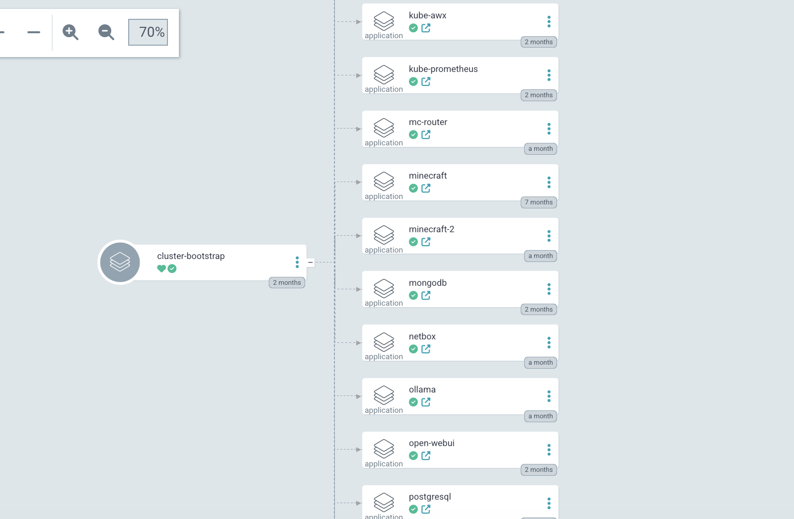
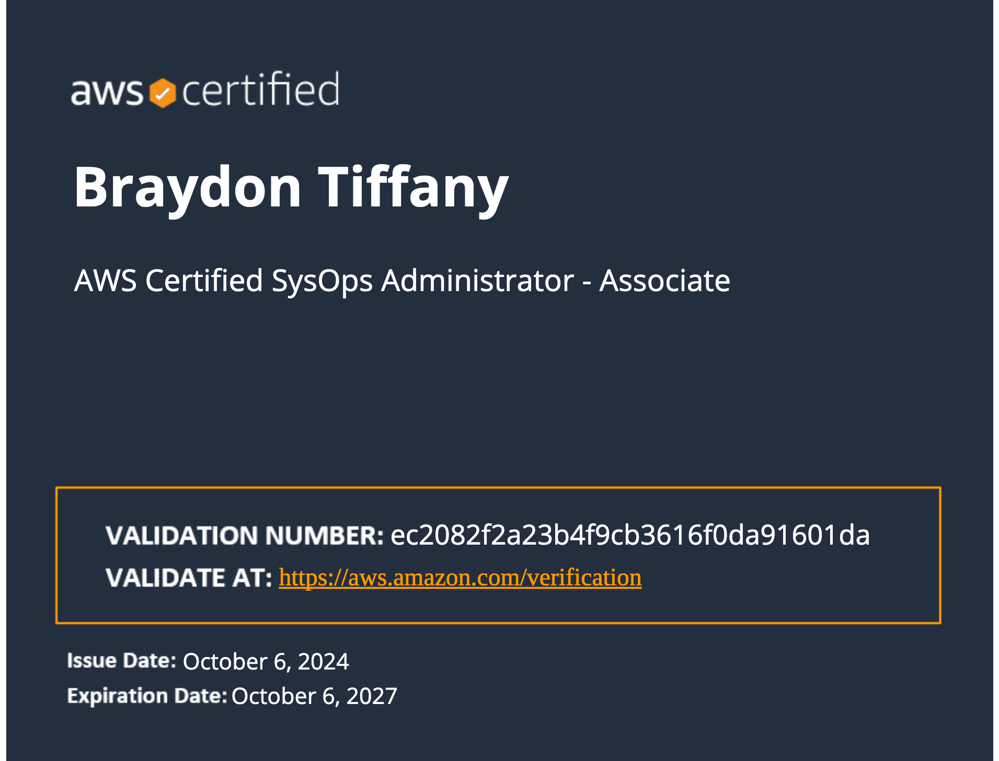
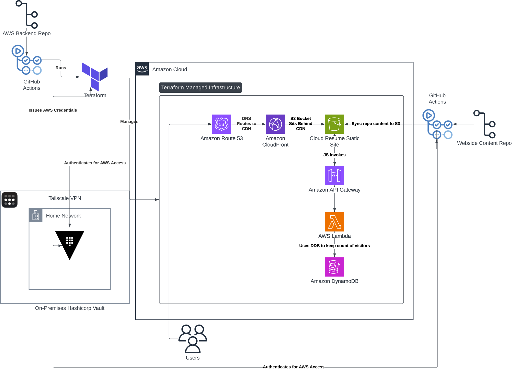

1. To demonstrate the ability to successfully deploy and manage a static website using modern cloud and DevOps principles.
2. For the practical purpose of having a portfolio page to complement my resume.
To learn more about me and what I do, please refer to the blocks in the portfolio section. You can also review my resume PDF from the navbar in the top corner of the page. For inquiries, please email me using the button below or simply reach out to me on LinkedIn.
In late 2024 after attending KubeCon, I decided to turn my basic Docker homelab into one powered entirely by Kubernetes.

I currently operate a three-node on-premises cluster from my apartment. Throughout my time with it, I have struggled a lot but the learning experience has paid off immensely.
I use this infrastructure for both practical and learning purposes, and as such, the application stack is quite varied. I have Minecraft servers, Home Assistant, Homepage and Jellyfin for the practical stuff I use daily in my home. In addition to that, I also have multiple databases, Prometheus, Netbox, Grafana, Hashicorp Vault and others.
For my Kubernetes distribution, I chose RKE2 paired with Rancher. I love Rancher for its clean Web UI, but more importantly, RKE2 provides a non-opinionated, vanilla-like Kubernetes experience for learning. While K3s is the standard go-to for homelabs, I preferred RKE2 because it includes etcd by default and doesn't rely on a single-binary architecture.
Linux System Administration
Right around the time when COVID started, I decided to double-down and learn Linux. This has paid off for me immensely.

My desktop PC running a KDE version of Fedora, my prefered distro.
I often call Linux my bread and butter when it comes to computing. When I was initially learning Linux, I did so in a sort of backwards way: I started with the CLI and worked my back back to desktop environments. With this kind of learning, things did not seem as obfuscated and it provided mroe clarity for me.
In 2022, I was able to prove my Linux competence by achieving the Red Hat Certified System Administrator certification. This almost immediately labled me as the “Linux guy” at the jobs I have worked since that moment and has eventually allowed me to move away from being primarily a typical Windows admin.
I can go on all day about why I love Linux and why I think it is a near-perfect platform for enterprise systems, but that would be too long of a read. Suffice it to say, I use Linux on both servers and desktops daily.
Scripting and Automation
As I became more comfortable with Linux, I decided I wanted to pursue more modern and declarative approaches to automation.

My simple, but effective AWX dashboard
Ansible is something that I have always found fascinating. A way to automate multiple systems at once with only Python over an SSH connection. I have been playing around with Ansible for the past couple years, and in my current setup, I have found that it is useful for running automated backups to Backblaze via a script I can run on my multiple VMs I host on Proxmox. While there may be better ways to automate this via an API versus SSH, it works for me right now. In addition to backups, I also have an Ansible role that allows for easy additions of nodes to my cluster.
As for Terraform, the infrastructure for this very website you are reading this on was provisioned via Terraform. I have decided to include it with Ansible becasue even though they differ enough to not have one replace the other, there is some overlap between them. In 2025, I achieved the Terraform Associate certification.
Close Window
CI/CD
Running Kubernetes the “classic” way was fun for a few minutes, but GitOps is the way of the future!

My root app and apps underneath it in my Argo CD dashboard
During KubeCon North America 2024 in Salt Lake City, I found myself at a table discussion revolving around GitOps. Admittedly, I knew little to nothing about GitOps at that time, so I just smiled and nodded. What I do remember, however, is how much everyone in that discussion were praising the very idea of GitOps workflows. Fortunately for me in 2026, I now completely understand the hype surrounding it.
I have created a Git repo for managing my infrastrucure and nearly everything in my cluster is managed via GitOps. If my whole cluster hypothetically explodes, at least I can take comfort in the fact that all my configuration data is in GitHub! I have Argo CD set to automatcially sync with my repo so it is always up to date with what is declared in YAML. I do not miss having static documents or wikis for this stuff.
In addition to Argo CD, this very website and its infrastructure were made possible by GitHub Actions. I have an action for applying Terraform code and destroying Terraform code. You can find out more in the Cloud Resume Challenge section of this page.
AWS and Cloud
In 2021, I decided to stop ignoring the cloud and deicded to study AWS.

My SysOps Administrator certificate
My AWS journey started in 2021 with the Cloud Practitioner certification, which gave me a foundational understanding of the platform's core services and pricing model. I built on that in 2022 with the Solutions Architect Associate, which pushed me into designing resilient, cost effective architectures rather than just knowing individual services. In 2024, I earned the SysOps Administrator Associate, rounding out my knowledge with a deeper focus on operations: monitoring, automation, and troubleshooting at scale.
This progression mirrors how I actually use AWS day to day. As a Linux Administrator, I manage EC2 infrastructure in a project based environment, working hands on with EC2, NetApp ONTAP, security groups, Route 53, and load balancers to keep systems provisioned, connected, and running reliably. That operational work is where the SysOps material has been most directly applicable.
Together, these certifications and my day to day work reflect a full stack view of AWS: I can design an architecture, provision it, and then operate and troubleshoot it long term, not just stand it up and walk away.
Cloud Resume Challenge
This very portfolio website is part of the Cloud Resume Challenge!

Truth be told, I first heard about the Cloud Resume Challenge years ago. I thought it seemed like a fun and quirky thing to do to show off your resume, but I did not bother with it. As time went on, however, I kept thinking how cool and beneficial it would be to have a portfolio website of my own to live alongside my LinkedIn and actual resume. As an infrastrucute guy first and foremost, I thought that the Cloud Resume Challenge focused too much on web design and web dev and expected someone to be savvy in that field. After reading the official “guidelines”, however, I found out that the actual challenge views the HTML/CSS as more of a means to an end rather than something you are trying to prove. With that newly founded information, I felt like I could pull this off in a way without saying I “cheated”.
The website you see before you was built from a template I found online, and while I did use AI to assist with some HTML/CSS teaching and with articulating some text here and there, all the code for this website was done by an actual human, even if it may be a little sloppy. There is nothing I love more than learning about tech, even though web development is certainly not something I’d like to go too deep into. For what it’s worth, it was a fun part of the process, though!
The goal of this portfolio site is not to drown visitors with every little detail about my skills or career history, but to simply provide an overview to grab attention. With that being stated, the breakdown of what I used and created for the Cloud Resume Challenge, you can check out my GitHub repo and the readme for this project by clicking here. You can also find the GitHub as well as a LinkedIn link at the bottom of the page.
In addtion to the general portfolio and resume information you will find on here, you will also notice a visitor counter below. Not only is this metric useful for me to see how many visit my site, but it was part of the challenge to gain exposure to something with Lambda functions and a database.
More information about the Cloud Resume Challenge can be found here.